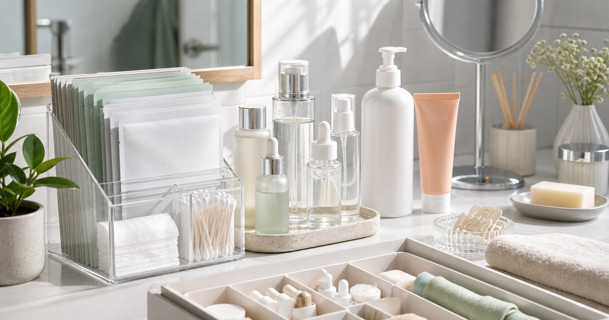

Elite Fashion｜日常保養別堆太多：精華、面膜、身體保養與防曬的整理順序
保養品不需要越買越多。先把清潔後、出門前、洗澡後與週末整理分開，精華、面膜、身體保養與防曬才不會互相搶位。

先分日常、週末與出門前三層
保養品要先依使用時段分層。每天都用的精華或乳液放最順手，週末才用的面膜收在第二層，出門前用品放在玄關或梳妝台出口。
可以把 Cell Secret、AYSWE、唯詩生醫、雪亞緹、Bioyona 與 THANN 放進同一個日常情境裡比較，但順序要放對。編輯部會先看使用頻率、清潔保存、是否適合出門攜帶、是否容易和既有用品搭配，而不是把保養或工具堆成越多越好。
比較穩妥的判斷是先確認 哪幾樣真的每天會用，哪幾樣只是偶爾使用。常見失誤是 把所有瓶罐排在檯面上，早晚都要重新決定；在 忙碌上班日、週末整理與小浴室收納 裡，能被穩定使用、容易收好、看得懂使用限制的品項，通常比一次買很多更實際。
- 每天用的品項不超過一排。
- 週末用品另放一格，避免干擾日常。
精華類用品要看搭配，不是看名字
精華、乳液或特殊保養品常常有漂亮名稱，但日常更該看質地、使用步驟、是否和既有用品衝突，以及自己是否願意固定使用。
可以把 Cell Secret、AYSWE、唯詩生醫與 Bioyona 放進同一個日常情境裡比較，但順序要放對。編輯部會先看使用頻率、清潔保存、是否適合出門攜帶、是否容易和既有用品搭配，而不是把保養或工具堆成越多越好。
比較穩妥的判斷是先確認 質地是否適合早晚、是否會和防曬或底妝打架。常見失誤是 被成分名吸引後一次加入太多新用品；在 早晨趕時間與晚上想快速收尾的保養流程 裡，能被穩定使用、容易收好、看得懂使用限制的品項，通常比一次買很多更實際。
- 一次只加入一個新步驟較容易觀察。
- 若肌膚容易不適，先小範圍嘗試並留意標示。
面膜與週末保養要有固定位置
面膜、特殊清潔或週末保養最怕被放到忘記。它們不應該擠在每日用品旁邊，而是有一個固定週末位置。
可以把 雪亞緹、AYSWE、Cell Secret 與 THANN 放進同一個日常情境裡比較，但順序要放對。編輯部會先看使用頻率、清潔保存、是否適合出門攜帶、是否容易和既有用品搭配，而不是把保養或工具堆成越多越好。
比較穩妥的判斷是先確認 保存方式、使用頻率與是否容易看見到期資訊。常見失誤是 囤太多片狀或罐裝用品，最後過期才想起來；在 週末晚上、旅行前整理與浴室抽屜 裡，能被穩定使用、容易收好、看得懂使用限制的品項，通常比一次買很多更實際。
- 週末用品數量要少而清楚。
- 開封日期可貼在瓶身或收納盒上。
身體保養跟毛巾、衣物一起看
身體保養常常不是缺產品，而是洗澡後沒有順手的位置。毛巾、睡衣、身體乳或香氛用品如果動線順，使用率會自然提高。
可以把 THANN、MORINO、雪亞緹與 Bioyona 放進同一個日常情境裡比較，但順序要放對。編輯部會先看使用頻率、清潔保存、是否適合出門攜帶、是否容易和既有用品搭配，而不是把保養或工具堆成越多越好。
比較穩妥的判斷是先確認 洗澡後站在哪裡擦乾、用品放哪裡、衣物是否會沾到。常見失誤是 把身體用品放太遠，洗完澡就懶得使用；在 小浴室、租屋空間與晚間收尾流程 裡，能被穩定使用、容易收好、看得懂使用限制的品項，通常比一次買很多更實際。
- 身體保養品放在擦乾後能立刻拿到的位置。
- 毛巾和衣物要留出乾爽區，避免混亂。
防曬整理要接近出門動線
出門前用品不要和夜間用品混在一起。防曬、帽子、小包、鑰匙或口罩若能集中在出門前區域，就不必每天早上翻梳妝台。
可以把 UV100、Cell Secret、AYSWE 與 S′AIME 放進同一個日常情境裡比較，但順序要放對。編輯部會先看使用頻率、清潔保存、是否適合出門攜帶、是否容易和既有用品搭配，而不是把保養或工具堆成越多越好。
比較穩妥的判斷是先確認 出門前最後五分鐘會經過哪裡、是否需要補帶小物。常見失誤是 把出門用品放在浴室深處，早上永遠找不到；在 上班通勤、客戶拜訪與週末外出 裡，能被穩定使用、容易收好、看得懂使用限制的品項，通常比一次買很多更實際。
- 出門用品可放玄關或包包旁。
- 防曬相關用品仍需依個人需求與商品標示使用。
一套成熟保養架構，是少而清楚
整理到最後，保養架構應該讓你更少猶豫。每天使用、週末使用、出門前使用，各自有位置，才不會讓保養變成另一份工作。
可以把 Cell Secret、AYSWE、唯詩生醫、雪亞緹、Bioyona 與 THANN 放進同一個日常情境裡比較，但順序要放對。編輯部會先看使用頻率、清潔保存、是否適合出門攜帶、是否容易和既有用品搭配，而不是把保養或工具堆成越多越好。
比較穩妥的判斷是先確認 每一層是否有明確使用時段與收納位置。常見失誤是 把新的每一瓶都留在檯面上，最後看起來很滿卻不清楚；在 需要維持工作日體面與週末修整的生活 裡，能被穩定使用、容易收好、看得懂使用限制的品項，通常比一次買很多更實際。
- 保養流程先求穩，再求變化。
- 不確定的品項先暫停，不必硬塞進流程。
FAQ
保養品越多越完整嗎？
不一定。先把每天、週末與出門前的用品分開，能穩定使用通常比品項很多更重要。
新保養品應該一次加入很多嗎？
不建議。一次加入一個新步驟比較容易觀察使用感，也比較不會讓流程失控。
防曬用品要放在哪裡？
建議接近出門動線，例如玄關、包包旁或梳妝台出口，而不是和夜間用品混放。
下一步建議
如果你想讓保養流程更清楚，可以先把每日、週末和出門前用品分成三個位置。
重要警語
本文為一般保養流程與收納情境整理，不構成肌膚建議或個別測試報告。保養品請依個人膚況、商品標示與專業建議使用。
本文含品牌／商品導購連結；若你透過部分商品連結前往選購，Elite Fashion 可能取得合作收益。本文仍以編輯判斷與使用情境整理為主，價格、規格、活動與庫存請以商品頁公告為準。